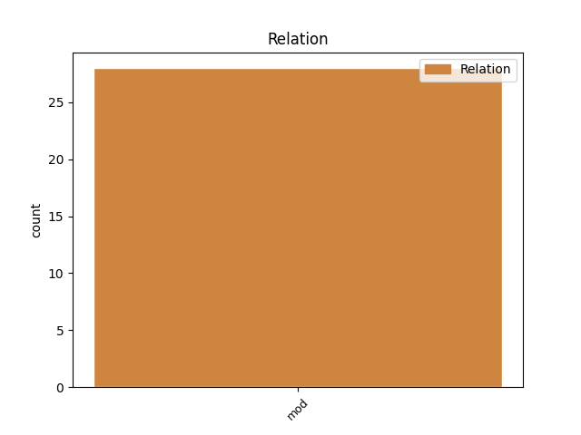
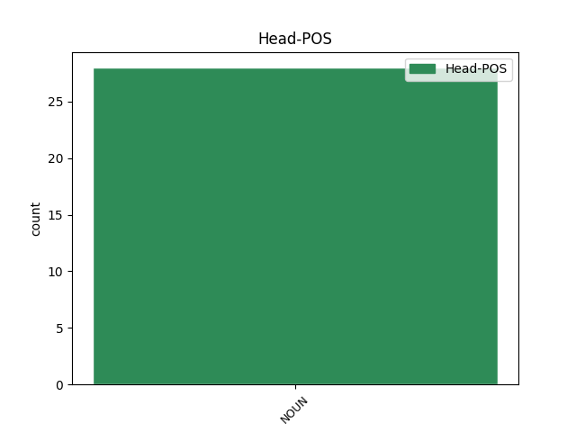
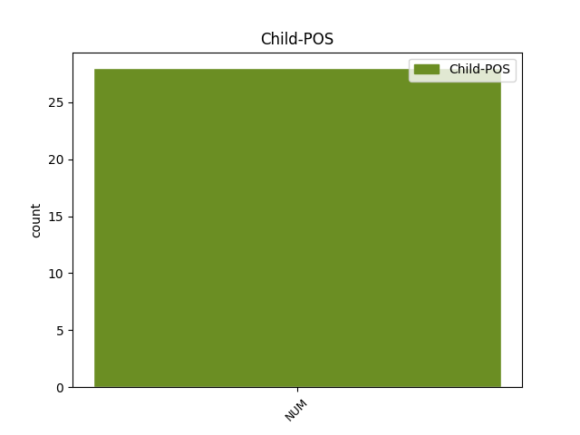

Distribution of features within this leaf



Agreement Rules sorted by frequency.
- When the dependent token is the modifer(mod) of the head token, and the dependent token is NUM.
1 (6) _ _ _ _ 0 _ _ _
2 Pokud _ _ _ _ 0 _ _ _
3 nejpozději _ _ _ _ 0 _ _ _
4 k _ _ _ _ 0 _ _ _
5 poslednímu _ _ _ _ 0 _ _ _
6 dni _ _ _ _ 0 _ _ _
7 účetního _ _ _ _ 0 _ _ _
8 období _ _ _ _ 0 _ _ _
9 , _ _ _ _ 0 _ _ _
10 ve _ _ _ _ 0 _ _ _
11 kterém _ _ _ _ 0 _ _ _
12 skončí _ _ _ _ 0 _ _ _
13 tříletá _ _ _ _ 0 _ _ _
14 lhůta _ _ _ _ 0 _ _ _
15 podle _ _ _ _ 0 _ _ _
16 odstavce _ _ _ _ 0 _ _ _
17 5 _ _ _ _ 0 _ _ _
18 , _ _ _ _ 0 _ _ _
19 účetní _ _ _ _ 0 _ _ _
20 jednotka _ _ _ _ 0 _ _ _
21 požádá _ _ _ _ 0 _ _ _
22 o _ _ _ _ 0 _ _ _
23 přijetí _ _ _ _ 0 _ _ _
24 cenného _ _ _ _ 0 _ _ _
25 papíru _ _ _ _ 0 _ _ _
26 k _ _ _ _ 0 _ _ _
27 obchodování _ _ _ _ 0 _ _ _
28 na _ _ _ _ 0 _ _ _
29 evropském _ _ _ _ 0 _ _ _
30 regulovaném _ _ _ _ 0 _ _ _
31 trhu _ _ _ _ 0 _ _ _
32 , _ _ _ _ 0 _ _ _
33 může _ _ _ _ 0 _ _ _
34 prodloužit _ _ _ _ 0 _ _ _
35 používání _ _ _ _ 0 _ _ _
36 mezinárodních _ _ _ _ 0 _ _ _
37 účetních _ _ _ _ 0 _ _ _
38 standardů _ _ _ _ 0 _ _ _
39 ještě _ _ _ _ 0 _ _ _
40 o _ _ _ _ 0 _ _ _
41 jedno jeden NUM ClNS4---------- Case=Acc|Gender=Neut|Number=Sing|NumForm=Word|NumType=Card|NumValue=1,2,3 43 mod _ _
42 účetní _ _ _ _ 0 _ _ _
43 období období NOUN NNNS4-----A---- Case=Acc|Gender=Neut|Number=Sing|Polarity=Pos 0 _ _ _
44 . _ _ _ _ 0 _ _ _
Disagree Examples:
1 (2) _ _ _ _ 0 _ _ _
2 Položka _ _ _ _ 0 _ _ _
3 " _ _ _ _ 0 _ _ _
4 C.I.2._Nedokončená_výroba_a_polotovary _ _ _ _ 0 _ _ _
5 " _ _ _ _ 0 _ _ _
6 obsahuje _ _ _ _ 0 _ _ _
7 a) _ _ _ _ 0 _ _ _
8 produkty _ _ _ _ 0 _ _ _
9 , _ _ _ _ 0 _ _ _
10 které _ _ _ _ 0 _ _ _
11 prošly _ _ _ _ 0 _ _ _
12 jedním jeden NUM ClZS7---------- Case=Ins|Gender=Masc,Neut|Number=Sing|NumForm=Word|NumType=Card|NumValue=1,2,3 16 mod _ _
13 nebo _ _ _ _ 0 _ _ _
14 několika _ _ _ _ 0 _ _ _
15 výrobními _ _ _ _ 0 _ _ _
16 stupni stupeň NOUN NNIP7-----A---- Animacy=Inan|Case=Ins|Gender=Masc|Number=Plur|Polarity=Pos 0 _ _ _
17 a _ _ _ _ 0 _ _ _
18 nejsou _ _ _ _ 0 _ _ _
19 již _ _ _ _ 0 _ _ _
20 materiálem _ _ _ _ 0 _ _ _
21 , _ _ _ _ 0 _ _ _
22 nejsou _ _ _ _ 0 _ _ _
23 však _ _ _ _ 0 _ _ _
24 dosud _ _ _ _ 0 _ _ _
25 hotovým _ _ _ _ 0 _ _ _
26 výrobkem _ _ _ _ 0 _ _ _
27 ; _ _ _ _ 0 _ _ _
28 tato _ _ _ _ 0 _ _ _
29 položka _ _ _ _ 0 _ _ _
30 rovněž _ _ _ _ 0 _ _ _
31 obsahuje _ _ _ _ 0 _ _ _
32 nedokončené _ _ _ _ 0 _ _ _
33 činnosti _ _ _ _ 0 _ _ _
34 , _ _ _ _ 0 _ _ _
35 při _ _ _ _ 0 _ _ _
36 nichž _ _ _ _ 0 _ _ _
37 nevznikají _ _ _ _ 0 _ _ _
38 hmotné _ _ _ _ 0 _ _ _
39 produkty _ _ _ _ 0 _ _ _
40 , _ _ _ _ 0 _ _ _
41 b) _ _ _ _ 0 _ _ _
42 odděleně _ _ _ _ 0 _ _ _
43 evidované _ _ _ _ 0 _ _ _
44 produkty _ _ _ _ 0 _ _ _
45 , _ _ _ _ 0 _ _ _
46 to _ _ _ _ 0 _ _ _
47 je _ _ _ _ 0 _ _ _
48 polotovary _ _ _ _ 0 _ _ _
49 , _ _ _ _ 0 _ _ _
50 které _ _ _ _ 0 _ _ _
51 dosud _ _ _ _ 0 _ _ _
52 neprošly _ _ _ _ 0 _ _ _
53 všemi _ _ _ _ 0 _ _ _
54 výrobními _ _ _ _ 0 _ _ _
55 stupni _ _ _ _ 0 _ _ _
56 a _ _ _ _ 0 _ _ _
57 budou _ _ _ _ 0 _ _ _
58 dokončeny _ _ _ _ 0 _ _ _
59 nebo _ _ _ _ 0 _ _ _
60 zkompletovány _ _ _ _ 0 _ _ _
61 do _ _ _ _ 0 _ _ _
62 hotových _ _ _ _ 0 _ _ _
63 výrobků _ _ _ _ 0 _ _ _
64 v _ _ _ _ 0 _ _ _
65 dalším _ _ _ _ 0 _ _ _
66 výrobním _ _ _ _ 0 _ _ _
67 procesu _ _ _ _ 0 _ _ _
68 účetní _ _ _ _ 0 _ _ _
69 jednotky _ _ _ _ 0 _ _ _
70 . _ _ _ _ 0 _ _ _
1 (3) _ _ _ _ 0 _ _ _
2 Pokud _ _ _ _ 0 _ _ _
3 jsou _ _ _ _ 0 _ _ _
4 u _ _ _ _ 0 _ _ _
5 stejného _ _ _ _ 0 _ _ _
6 druhu _ _ _ _ 0 _ _ _
7 zásob _ _ _ _ 0 _ _ _
8 využity _ _ _ _ 0 _ _ _
9 způsoby _ _ _ _ 0 _ _ _
10 ocenění _ _ _ _ 0 _ _ _
11 cenou _ _ _ _ 0 _ _ _
12 , _ _ _ _ 0 _ _ _
13 která _ _ _ _ 0 _ _ _
14 vychází _ _ _ _ 0 _ _ _
15 z _ _ _ _ 0 _ _ _
16 ocenění _ _ _ _ 0 _ _ _
17 jejich _ _ _ _ 0 _ _ _
18 úbytků _ _ _ _ 0 _ _ _
19 cenou _ _ _ _ 0 _ _ _
20 zjištěnou _ _ _ _ 0 _ _ _
21 podle _ _ _ _ 0 _ _ _
22 ustanovení _ _ _ _ 0 _ _ _
23 §_25_odst._3_zákona _ _ _ _ 0 _ _ _
24 , _ _ _ _ 0 _ _ _
25 pak _ _ _ _ 0 _ _ _
26 v _ _ _ _ 0 _ _ _
27 rámci _ _ _ _ 0 _ _ _
28 jednoho jeden NUM ClZS2---------- Case=Gen|Gender=Masc,Neut|Number=Sing|NumForm=Word|NumType=Card|NumValue=1,2,3 30 mod _ _
29 analytického _ _ _ _ 0 _ _ _
30 účtu účet NOUN NNIS2-----A---- Animacy=Inan|Case=Gen|Gender=Masc|Number=Sing|Polarity=Pos 0 _ _ _
31 zásob _ _ _ _ 0 _ _ _
32 je _ _ _ _ 0 _ _ _
33 nutno _ _ _ _ 0 _ _ _
34 používat _ _ _ _ 0 _ _ _
35 pouze _ _ _ _ 0 _ _ _
36 jeden _ _ _ _ 0 _ _ _
37 způsob _ _ _ _ 0 _ _ _
38 ocenění _ _ _ _ 0 _ _ _
39 ; _ _ _ _ 0 _ _ _
40 pokud _ _ _ _ 0 _ _ _
41 je _ _ _ _ 0 _ _ _
42 využit _ _ _ _ 0 _ _ _
43 vážený _ _ _ _ 0 _ _ _
44 aritmetický _ _ _ _ 0 _ _ _
45 průměr _ _ _ _ 0 _ _ _
46 , _ _ _ _ 0 _ _ _
47 počítá _ _ _ _ 0 _ _ _
48 se _ _ _ _ 0 _ _ _
49 nejméně _ _ _ _ 0 _ _ _
50 jednou _ _ _ _ 0 _ _ _
51 za _ _ _ _ 0 _ _ _
52 měsíc _ _ _ _ 0 _ _ _
53 . _ _ _ _ 0 _ _ _
1 (2) _ _ _ _ 0 _ _ _
2 V _ _ _ _ 0 _ _ _
3 účetní _ _ _ _ 0 _ _ _
4 závěrce _ _ _ _ 0 _ _ _
5 se _ _ _ _ 0 _ _ _
6 navíc _ _ _ _ 0 _ _ _
7 za _ _ _ _ 0 _ _ _
8 vzájemné _ _ _ _ 0 _ _ _
9 zúčtování _ _ _ _ 0 _ _ _
10 nepovažuje _ _ _ _ 0 _ _ _
11 souhrnné _ _ _ _ 0 _ _ _
12 vykázání _ _ _ _ 0 _ _ _
13 kursových _ _ _ _ 0 _ _ _
14 rozdílů _ _ _ _ 0 _ _ _
15 , _ _ _ _ 0 _ _ _
16 zisků _ _ _ _ 0 _ _ _
17 a _ _ _ _ 0 _ _ _
18 ztrát _ _ _ _ 0 _ _ _
19 z _ _ _ _ 0 _ _ _
20 přecenění _ _ _ _ 0 _ _ _
21 majetku _ _ _ _ 0 _ _ _
22 a _ _ _ _ 0 _ _ _
23 závazků _ _ _ _ 0 _ _ _
24 na _ _ _ _ 0 _ _ _
25 reálnou _ _ _ _ 0 _ _ _
26 hodnotu _ _ _ _ 0 _ _ _
27 , _ _ _ _ 0 _ _ _
28 pohledávek _ _ _ _ 0 _ _ _
29 a _ _ _ _ 0 _ _ _
30 závazků _ _ _ _ 0 _ _ _
31 , _ _ _ _ 0 _ _ _
32 s _ _ _ _ 0 _ _ _
33 výjimkou _ _ _ _ 0 _ _ _
34 přijatých _ _ _ _ 0 _ _ _
35 a _ _ _ _ 0 _ _ _
36 poskytnutých _ _ _ _ 0 _ _ _
37 záloh _ _ _ _ 0 _ _ _
38 , _ _ _ _ 0 _ _ _
39 vůči _ _ _ _ 0 _ _ _
40 téže _ _ _ _ 0 _ _ _
41 fyzické _ _ _ _ 0 _ _ _
42 nebo _ _ _ _ 0 _ _ _
43 právnické _ _ _ _ 0 _ _ _
44 osobě _ _ _ _ 0 _ _ _
45 , _ _ _ _ 0 _ _ _
46 které _ _ _ _ 0 _ _ _
47 mají _ _ _ _ 0 _ _ _
48 dobu _ _ _ _ 0 _ _ _
49 splatnosti _ _ _ _ 0 _ _ _
50 do _ _ _ _ 0 _ _ _
51 jednoho jeden NUM ClZS2---------- Case=Gen|Gender=Masc,Neut|Number=Sing|NumForm=Word|NumType=Card|NumValue=1,2,3 52 mod _ _
52 roku rok NOUN NNIS2-----A---1 Animacy=Inan|Case=Gen|Gender=Masc|Number=Sing|Polarity=Pos 0 _ _ _
53 a _ _ _ _ 0 _ _ _
54 jsou _ _ _ _ 0 _ _ _
55 vedeny _ _ _ _ 0 _ _ _
56 ve _ _ _ _ 0 _ _ _
57 stejných _ _ _ _ 0 _ _ _
58 měnách _ _ _ _ 0 _ _ _
59 , _ _ _ _ 0 _ _ _
60 vykázání _ _ _ _ 0 _ _ _
61 vlastních _ _ _ _ 0 _ _ _
62 dluhopisů _ _ _ _ 0 _ _ _
63 a _ _ _ _ 0 _ _ _
64 vykázání _ _ _ _ 0 _ _ _
65 rezervy _ _ _ _ 0 _ _ _
66 na _ _ _ _ 0 _ _ _
67 daň _ _ _ _ 0 _ _ _
68 z _ _ _ _ 0 _ _ _
69 příjmů _ _ _ _ 0 _ _ _
70 a _ _ _ _ 0 _ _ _
71 uhrazených _ _ _ _ 0 _ _ _
72 záloh _ _ _ _ 0 _ _ _
73 na _ _ _ _ 0 _ _ _
74 daň _ _ _ _ 0 _ _ _
75 z _ _ _ _ 0 _ _ _
76 příjmů _ _ _ _ 0 _ _ _
77 . _ _ _ _ 0 _ _ _
1 (4) _ _ _ _ 0 _ _ _
2 Uspořádání _ _ _ _ 0 _ _ _
3 a _ _ _ _ 0 _ _ _
4 označování _ _ _ _ 0 _ _ _
5 položek _ _ _ _ 0 _ _ _
6 rozvahy _ _ _ _ 0 _ _ _
7 a _ _ _ _ 0 _ _ _
8 výkazu _ _ _ _ 0 _ _ _
9 zisku _ _ _ _ 0 _ _ _
10 a _ _ _ _ 0 _ _ _
11 ztráty _ _ _ _ 0 _ _ _
12 a _ _ _ _ 0 _ _ _
13 jejich _ _ _ _ 0 _ _ _
14 obsahové _ _ _ _ 0 _ _ _
15 vymezení _ _ _ _ 0 _ _ _
16 a _ _ _ _ 0 _ _ _
17 způsoby _ _ _ _ 0 _ _ _
18 oceňování _ _ _ _ 0 _ _ _
19 použité _ _ _ _ 0 _ _ _
20 v _ _ _ _ 0 _ _ _
21 jednom jeden NUM ClZS6---------- Case=Loc|Gender=Masc,Neut|Number=Sing|NumForm=Word|NumType=Card|NumValue=1,2,3 23 mod _ _
22 účetním _ _ _ _ 0 _ _ _
23 období období NOUN NNNS6-----A---- Case=Loc|Gender=Neut|Number=Sing|Polarity=Pos 0 _ _ _
24 nesmí _ _ _ _ 0 _ _ _
25 účetní _ _ _ _ 0 _ _ _
26 jednotky _ _ _ _ 0 _ _ _
27 změnit _ _ _ _ 0 _ _ _
28 v _ _ _ _ 0 _ _ _
29 následujícím _ _ _ _ 0 _ _ _
30 účetním _ _ _ _ 0 _ _ _
31 období _ _ _ _ 0 _ _ _
32 . _ _ _ _ 0 _ _ _
1 Skutečnosti _ _ _ _ 0 _ _ _
2 podle _ _ _ _ 0 _ _ _
3 písmen _ _ _ _ 0 _ _ _
4 a)_až_f) _ _ _ _ 0 _ _ _
5 , _ _ _ _ 0 _ _ _
6 které _ _ _ _ 0 _ _ _
7 se _ _ _ _ 0 _ _ _
8 týkají _ _ _ _ 0 _ _ _
9 jednoho jeden NUM ClZS2---------- Case=Gen|Gender=Masc,Neut|Number=Sing|NumForm=Word|NumType=Card|NumValue=1,2,3 11 mod _ _
10 účetního _ _ _ _ 0 _ _ _
11 dokladu doklad NOUN NNIS2-----A---- Animacy=Inan|Case=Gen|Gender=Masc|Number=Sing|Polarity=Pos 0 _ _ _
12 , _ _ _ _ 0 _ _ _
13 mohou _ _ _ _ 0 _ _ _
14 být _ _ _ _ 0 _ _ _
15 obsaženy _ _ _ _ 0 _ _ _
16 na _ _ _ _ 0 _ _ _
17 více _ _ _ _ 0 _ _ _
18 účetních _ _ _ _ 0 _ _ _
19 záznamech _ _ _ _ 0 _ _ _
20 . _ _ _ _ 0 _ _ _